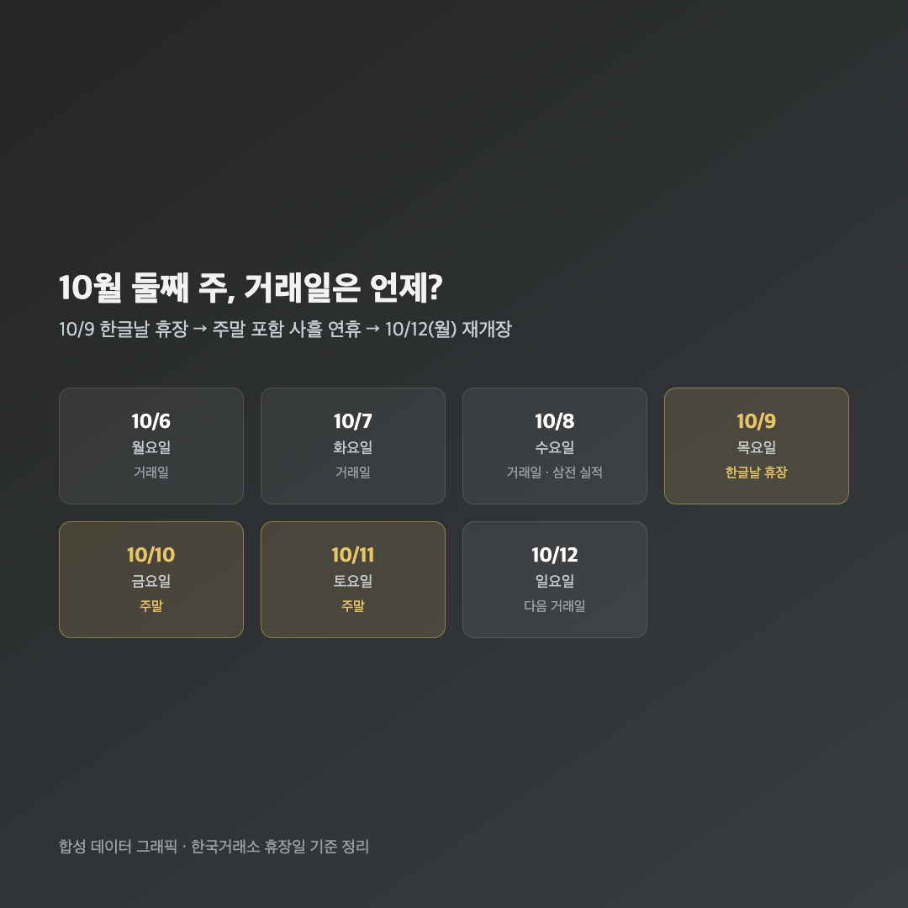
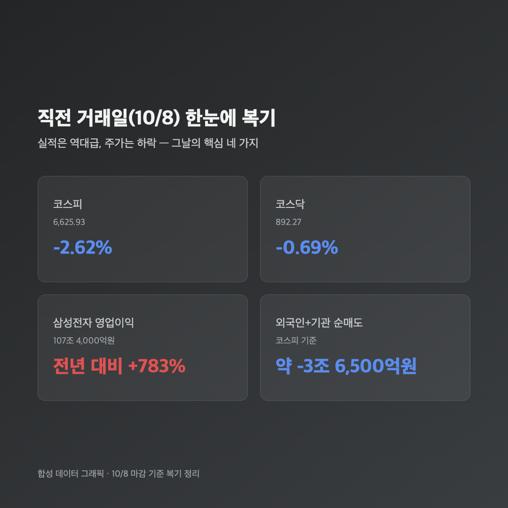
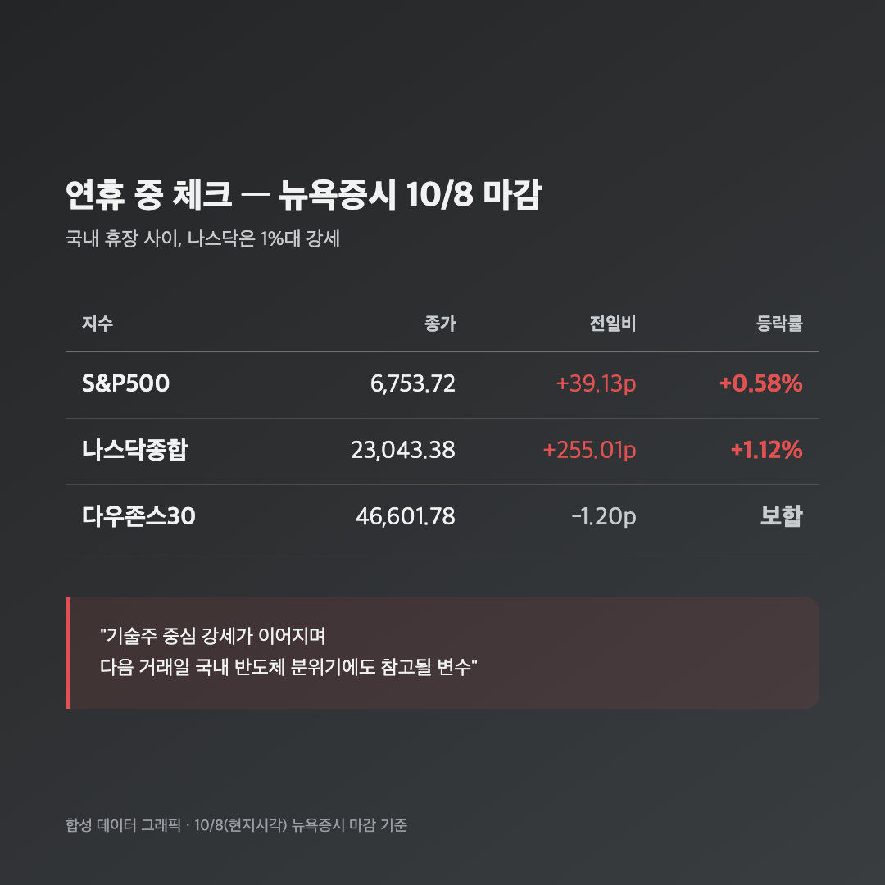

달력 보니까 오늘 빨간 날이더라고요. "오, 오늘은 쉬는 날이네" 했는데, 그게 한글날이라 국내 증시도 통째로 쉬었습니다. 거래가 없는 날이니 새로 정리할 지수는 없지만, 그렇다고 그냥 넘기기엔 어제(10/8) 터진 일이 워낙 커서 — 삼성전자 107조 실적 후폭풍하고, 밤사이 뉴욕 움직임까지 같이 짚어보려고요.
📅 오늘 국장이 없었던 이유 — 한글날 휴장
10월 9일(금) 한국거래소 휴장 / 다음 거래일은 10월 12일(월) |

한글날이 토요일·일요일이랑 안 겹쳐서 대체공휴일 없이 오늘 하루만 쉬고, 주말까지 이어져서 사흘 연휴가 됐어요. 그래서 "10.9 국장 정리"라는 제목을 달긴 했지만, 사실 오늘 날짜 기준으로 새로 생긴 거래 데이터는 없습니다 — 이 점은 분명히 밝히고 가야 할 것 같아서 맨 앞에 적어둬요. 대신 가장 최근 실제 거래일인 10/8 내용을 복기하고, 연휴 동안 체크해둘 거리를 정리하는 쪽으로 오늘 글을 채워볼게요.
📉 복기 – 직전 거래일(10/8), 삼성전자 107조에도 코스피 2.62% 하락
코스피 6,625.93 (-177.97포인트, -2.62%) / 코스닥 892.27 (-6.16포인트, -0.69%) |

어제 글에서 자세히 다루긴 했지만, 다시 봐도 신기한 하루였어요. 삼성전자가 3분기 잠정 매출 195조원, 영업이익 107조 4,000억원(전년 대비 +783%)이라는 역대급 숫자를 내놨는데 코스피는 2%대 넘게 빠졌으니까요. 저는 25주 들고 있는 삼성전자가 이 정도 실적을 냈으니 당연히 오를 줄 알았는데, "실적은 역대급, 주가는 뚝"이라는 결과를 또 한 번 복습하게 됐습니다.
| 하락 원인 | 내용 |
| 수급 공백 | 15조원 규모 자사주 매입이 10/6 종료, 지수 받쳐주던 매수 주체 소멸 |
| 옵션만기 | 10/8이 옵션만기일과 겹쳐 청산 물량 발생 |
| 외국인·기관 매도 | 외국인 -1조 9,885억원 / 기관 -1조 6,657억원, 개인이 +2조 9,008억원으로 받아냄 |
| 연휴 앞 포지션 축소 | 한글날 연휴를 앞두고 미리 물량 줄이려는 심리 작용 |
같은 반도체 안에서도 갈린 게 재밌었는데요, 삼성전자·SK하이닉스 같은 대형주는 빠졌지만 코스닥 반도체 장비주(주성엔지니어링 +8.89%, 원익IPS +4.88%, 리노공업 +4.46%)는 오히려 강세였어요. 메모리 기업들 설비투자(CAPEX)가 계속 늘 거란 기대가 장비주 쪽으로 옮겨간 거라고 하네요.
🇺🇸 연휴 중 체크포인트 – 뉴욕은 나스닥 1%대 강세
S&P500 6,753.72 (+0.58%) / 나스닥 23,043.38 (+1.12%) / 다우 46,601.78 (보합) |

국내 증시가 쉬는 사이에도 뉴욕은 움직였어요. 10/8(현지시각) 마감 기준으로 나스닥이 1%대 넘게 오르면서 기술주 강세를 이어갔고, S&P500도 소폭 상승, 다우만 거의 보합에 머물렀습니다. "다들 쉬어가는데 나스닥 혼자 열일했네" 싶더라고요. 기술주 중심 강세가 이어진 흐름이라, 다음 거래일 국내 반도체·기술주 분위기에도 참고가 될 만한 신호로 보여요.
🔮 다음 거래일(10/12 월) 전망 – 수급이 돌아오는지가 관전포인트
증권가에서는 10/8 급락이 삼성전자 실적 자체의 문제가 아니라 자사주 매입 종료·옵션만기·연휴 앞 포지션 정리 같은 일시적 수급 요인에 더 가깝다는 분석이 많았어요. 그래서 저는 연휴 끝나고 월요일에 외국인·기관이 다시 사는 쪽으로 돌아오는지를 제일 먼저 확인해볼 생각이에요. 다만 이건 10/8 시점까지 나온 증권가 반응을 바탕으로 한 전망일 뿐이라, 실제 월요일 결과는 다를 수 있다는 점은 미리 밝혀둘게요.
마무리하며
정리하면 오늘(10/9)은 한글날 휴장으로 국장 자체가 없었던 날이고, 가장 최근 거래일인 10/8은 코스피 6,625.93(-2.62%), 코스닥 892.27(-0.69%)로 "역대급 실적, 역설적 하락"이라는 하루였어요. 밤사이 뉴욕은 나스닥이 1%대 오르며 기술주 강세를 이어갔고요.
솔직히 저는 오늘 같은 날은 오히려 머리 식히기 좋은 타이밍인 것 같아요. 25주짜리 제 삼성전자는 어제도 빠졌지만, 일시적 수급 요인이라는 분석을 믿고 월요일 반응을 기다려보려고 합니다.
쉬는 날에도 포트폴리오 생각은 쉬지 않네요. 그래도 오늘은 진짜 쉴게요, 월요일에 다시 올게요 🌱